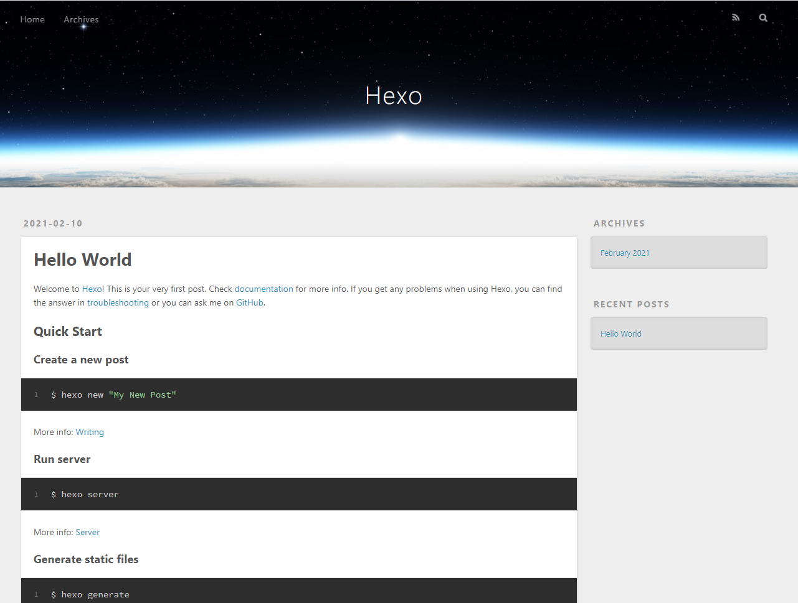

使用Github和Hexo搭建个人博客
准备工作
- 安装Git
- 安装Node.js
- 注册一个Github账号
搭建思路
本文介绍的个人博客属于静态页面，不需要自己管理数据库或者服务器。部署服务是Github的一个福利Github Pages提供的，博客页面使用基于Node.js的一个框架Hexo生成。在继续往下阅读之前，你需要先知道Git和Github怎么用，这里不详细展开这些内容。
Github Pages
Github提供的一个服务，创建一个指定名称的Github仓库，向其中上传html代码，Github会自动为用户部署这些内容，非常方便。但Github Pages都是一些静态页面，即不连接数据库，所有的页面内容都是静态的html、js（包括博客文章也是）。每个Github用户可以拥有一个以用户名为前缀的Github Page，也可以拥有无限个以项目为单位的Github Page。
本文后续搭建的博客使用的是用户名为前缀的Github Page。
Hexo
Hexo是一个基于Node.js的博客页面生成框架，用户只需要通过yml格式的配置文件进行配置，就可以对博客页面进行个性化的定制，由于作者是台湾人，所以这个框架对中文的支持很好，官方的中文文档也很详细，易于上手。
Hexo有多款主题，如果想要让博客焕然一新，只需要从Github上找一个自己喜欢的主题并安装到自己的项目目录里，少量配置后即可切换主题。
此外Hexo的扩展性也非常好，如果想要对自己的博客功能进行扩展（比如加一个评论功能），可以下载相应的插件并集成到项目中。
搭建步骤
首先让我们能够在本地把项目跑起来看看效果吧。
安装Node.js
从Node中文官网下载即可，安装过程就不详细介绍了，这里主要讲一讲怎么让Node.js使用国内的淘宝镜像，因为我们后续的许多操作都需要通过Node.js来下载相应的js依赖，而默认的镜像是国外的，下载实在太慢。
在cmd中使用下列命令。
npm config set registry https://registry.npm.taobao.org
完成后我们的npm命令就会从淘宝镜像下载js依赖。
安装Hexo
npm install -g hexo-cli
安装完hexo-cli后，我们就可以使用hexo的专用命令很方便的生成博客页面了。
生成Hexo项目
hexo init <folder>
其中folder是目录名称，如果不填的话，则所有项目文件默认生成到当前目录。
随后进入生成的项目根目录，使用以下指令安装js依赖。
npm install
生成后可以查看目录，几个比较重要的文件合目录如下：
- _config.yml，hexo的全局配置文件
- source目录，用于存放静态页面内容，比如html、js、图片之类的
- themes，用于存放hexo主题，下载过来的新主题可以放到这个目录下
试运行
此时即使不进行其他配置，Hexo博客也可以运行了，连续使用两条命令。
hexo generate（可缩写为hexo g）
hexo server（可缩写为hexo s）
此时去访问localhost:4000应该就能看到Hexo的默认页面效果，一般来说是下面这样的。

创建Github Page的仓库
登录自己的Github账号，创建一个仓库，命名规则如下。
<username>.github.io
这里的username是你的github账户名，创建成功后，你可以试着往里面存一个Index.html，随后访问<username>.github.io，应该就会显示你放进去的index.html渲染内容。
简单配置一下Hexo
现在博客里只有一篇默认的文章“Hello World”，同时页面的标题、作者等信息都是预设的，可以通过_config.yml进行一些简单的配置，并将网站部署到Github Page上。
用记事本打开项目根目录下的_config.yml，找到Site配置项。
# Site
title: Hexo（即html的title标签）
subtitle: ''（副标题）
description: ''（页面的简介，可在搜索引擎上显示出来）
keywords:（关键字词）
author: John Doe（作者名）
language: en（语言，中文是zh-Hans）
timezone: ''（时区，中国地区是Asia/Shanghai）
默认配置应该像上面这样，自己修改掉需要的条目即可。
然后找到Deployment配置项。
deploy:
type: git
repo: <repository url>
branch: [branch]
type填git，repo填你的Github项目SSH地址或者Https地址，branch是分支名（一般master就行）。
完成以上配置后，就可以保存退出了。
部署到Github Page上
在项目根目录下使用下列命令安装hexo的部署插件。
npm install hexo-deployer-git --save
使用hexo clean && hexo deploy即可将现有的Hexo项目部署到Github Page上，访问你的github.io即可查看，注意部署上去一般是需要一到两分钟的，在此之前你访问页面可能看不到效果。
后文
到这里位置，Github Page+Hexo的博客搭建指南就结束了，但重头戏还没开始呢，怎么发文章？碰到报错了怎么办？怎么进一步对Hexo配置？怎么更换Hexo主题？上面这些问题就留着后面说吧，应该会很快更新的。